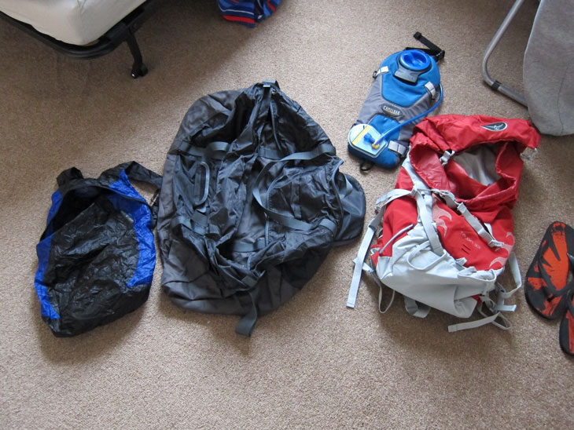
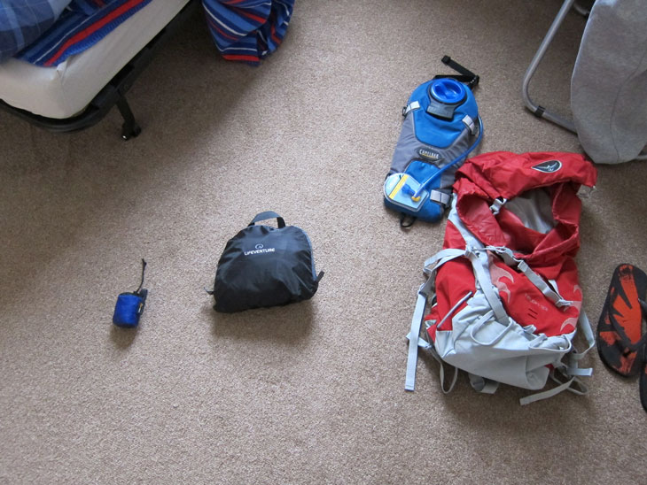
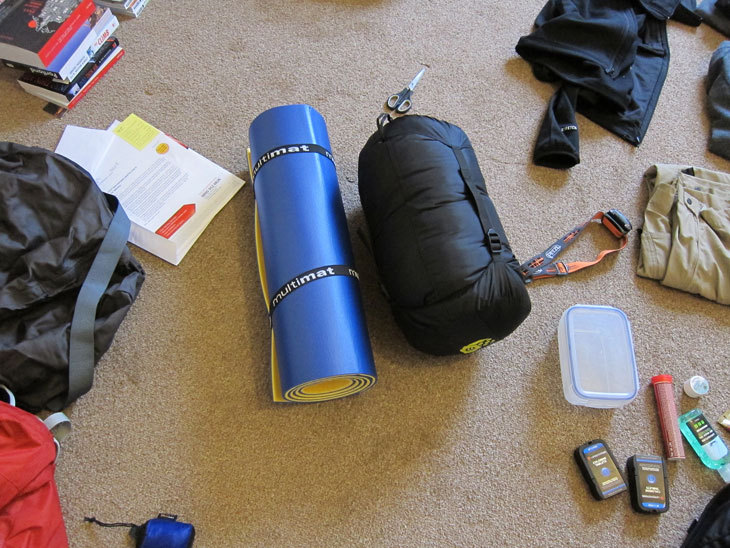
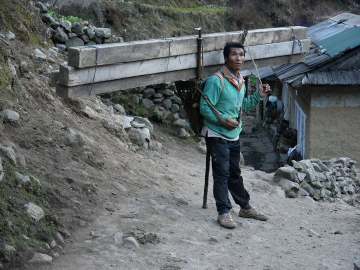

Besides toiletries, I tried to pack a minimum of items. I had to buy new bags, a new sleeping bag and a few other bits. 
I got myself an Osprey Talon 33 with a capacity of 35l. It happily held everything I needed it to, and my only real complaint was that it was a bright red colour, and cost me about twenty quid more than I needed to pay (from Snow and Rock). I did sometimes wish it had a zip at the bottom so I didn’t have to empty the bag to get something down there. It also had a nice compartment for my 3l Camelbak. It didn’t have anything to strap the drinking tube to though, which got annoying.
The guy at Snow+Rock sold me the correct size bag - not just capacity, but there were different sizes, and I have to say it fitted perfectly when strapped up. The load was spread nicely down my shoulders and waist, with no excess stress on my back, even when carrying a full pack.
A note about drinking systems - my drinking tube froze up as we neared Basecamp, which made drinking from my Camelbak nigh-on impossible. If that had been my only source of water, I would’ve been in trouble as there is no easy way of drinking from the bladder. It was actually so cold that there was ice in my water bottle which was kept inside my jacket!
I’m still a bit torn on the matter of a bladder - the convenience of the bladder reminded me to drink more, but a bottle is definitely less hassle. I think next time around, I’d go for the same setup with a second 700ml bottle. Also, the drinking tube got a kink in it, which stops liquid flowing through, which was also a pain at times. I’ve not used it since, but I suspect that kink will be a permanent annoyance. (There are products out there to alleviate these annoyances - insulating tubes and whatnot.) I’m not sure there is any easier way to carry 3l of water however - carrying three single-litre bottles would not be practical. 
Two of the bags I bought - the holdall and backpack, were self-packable and while this was novel, they were ultimately useless. The holdall had ripped a large hole in the side at some point (a win for the duct tape!), and the backpack was handy for leaving in the hotel locker with my souvenirs inside. I’ll take the backpack out again, as it wraps up small enough to be worthwhile … the holdall I threw away when I got home. Buying a 90l North Face duffel bag would be more worthwhile for future trips. 
For my sleeping bag I ended up with a Mountain Hardwear Lamina 0. I wasn’t really sure what I needed, but while it turned out to be insanely cold at times, we had rooms and beds (and I had a spare bed in my room to raid for duvets most nights). If you do need to buy a sleeping bag, I recommend a ‘mummy’ style one which you can wrap over the top of your head for when it gets really cold - I found that even a woolly hat wasn’t enough for the coldest nights.
What I paid for my sleeping was pretty much my budget, but it was only rated to -5°C (our coldest night was -9°C) and was synthetic (as opposed to down - down is warmer, costs more and doesn’t pack down as much). If you need to buy a sleeping bag, go for a true ‘four seasons’ bag. Also consider going for a longer bag so you can keep things in the footwell - clothes, socks, cold-vulnerable equipment, etc.
Details: rucksack £80, Camelbak £35, sleeping bag £120
Afterthoughts:
The sleeping mat was pretty useless as we stayed in lodges and had beds to sleep on. It wasn’t used once and was ditched partway through the trip just so I wouldn’t have to pack it any more. I wish I had used the bag room for trainers and pants instead.
For my trip, we had porters to carry our big bags. They do this by tying together a few bags (two per porter) into one big bag and carrying it on their backs using their own straps and ropes. It does mean that it doesn’t really matter how bulky your bag is (but don’t carry shitloads though - these guys aren’t superhuman or anything). 
(Okay, maybe they are, but still, try not to pack loads …)
Also bear in mind that you still have to carry your own stuff till you actually get to the mountains, heh.
Items to consider:
- Sleeping bag liner (for extra warmth)
- Rucksack raincover (to deter people from messing with your bag)
- Hot water flask (to double up as hot water bottle)
- North Face Large Duffel Bag